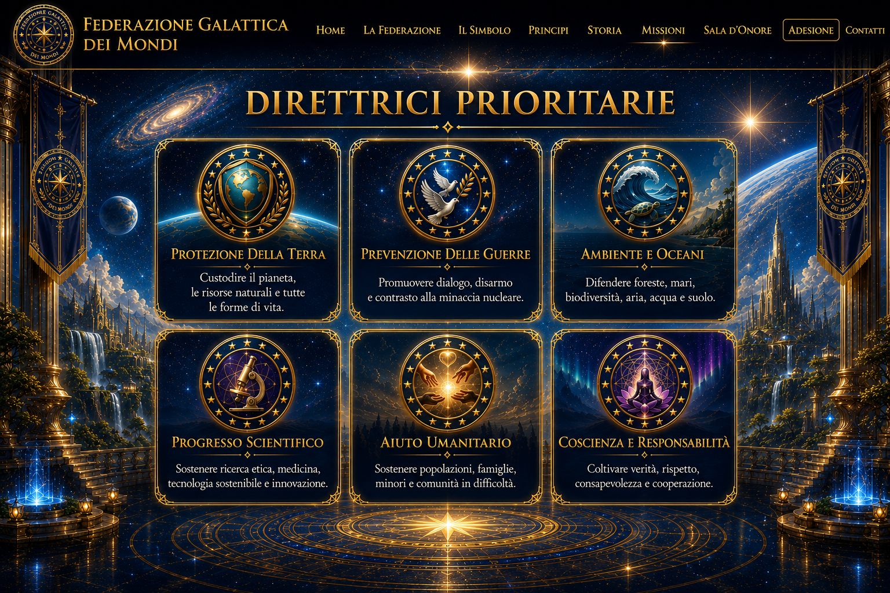
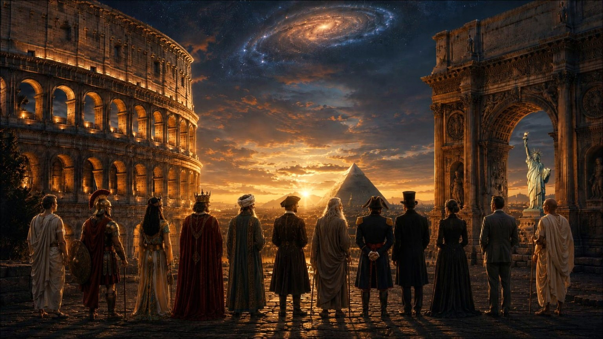
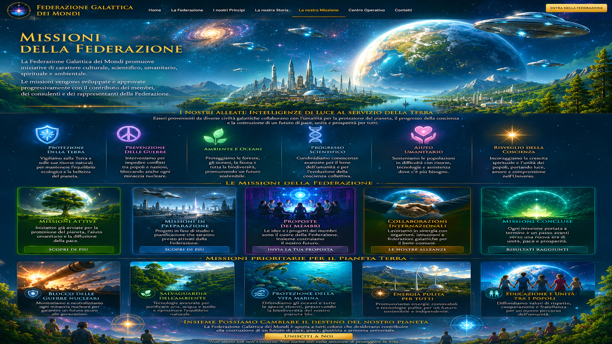

Alleanza universale per la pace e la giustizia dei popoli
Per una nuova civiltà fondata su pace, giustizia, verità, conoscenza e tutela della vita.
La Federazione nasce come spazio di incontro tra persone, idee, competenze e progetti orientati alla costruzione di un futuro più giusto, consapevole e rispettoso della vita.

Identità operativa
Il sito riunisce identità, principi, storia, missioni, centro operativo, Sala d’Onore, comunicazioni e adesione. Ogni sezione è collegata alle altre per trasformare valori e visione in iniziative concrete.


